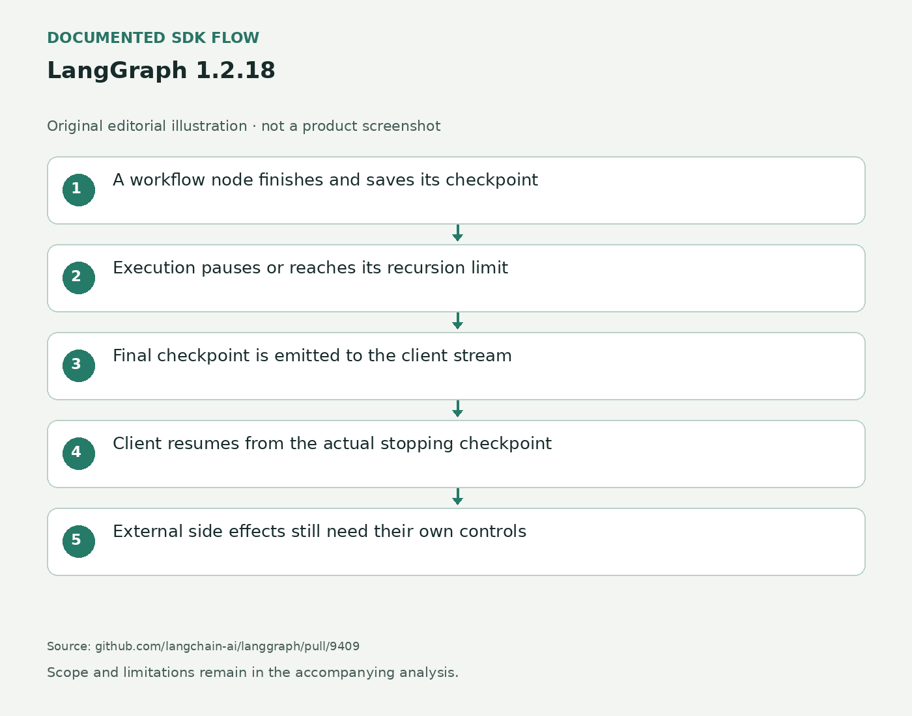

暂停发生在保存之后
一个需要人工确认的流程，可能先整理订单，再在某个节点之后暂停。LangGraph原本已经保存此刻检查点，但只有下一次运行循环准备任务时才将它发到流里。interrupt_after立即停下或递归次数用尽时，客户端就收不到最后那份状态。维护者指出，按最后收到的检查点恢复的客户端可能重做最后一个节点。1.2.18将准备后续任务与发送检查点的逻辑用于这两条退出路径，让客户端看见实际停止位置。这里修的是保存状态与对外通知的落差，不是增加一个新的业务审批产品。
LangGraph 1.2.18 · 开发工具 / SDK更新

一个需要人工确认的流程，可能先整理订单，再在某个节点之后暂停。LangGraph原本已经保存此刻检查点，但只有下一次运行循环准备任务时才将它发到流里。interrupt_after立即停下或递归次数用尽时，客户端就收不到最后那份状态。维护者指出，按最后收到的检查点恢复的客户端可能重做最后一个节点。1.2.18将准备后续任务与发送检查点的逻辑用于这两条退出路径，让客户端看见实际停止位置。这里修的是保存状态与对外通知的落差，不是增加一个新的业务审批产品。
另一项修复涉及节点的error_handler。错误处理器已经处理完异常，但在messages或custom流、开启子图或者旁边存在并行节点的执行路径中，执行器仍可能在退出时重新抛出原错误。新实现让执行器识别已处理的任务，避免把它再次当成未处理失败。只订阅tasks或debug的客户端此前还可能漏掉失败任务的错误结果，因为快速路径先抛错而没有排空事件队列。此次调整使失败结果有机会先发出，界面可据此解释具体失败节点，而不是只有一个总任务异常。
本次还把DeltaChannel默认完整快照间隔从一千次更新缩短为一百次。较短的增量链减少长线程读取时需要重建的内容，代价是更多完整状态占用存储；维护者保留snapshot_frequency参数，团队可以继续使用旧间隔。这不是统一的十倍性能提升，发布页没有给出覆盖所有业务的延迟基准。频繁修改大型状态与小型状态的成本不同，采购或运维判断仍要看实际检查点大小、读取频率与保留时间。开发者得到的是一个更偏向读取效率的默认值和可调整的开关。
对产品团队而言，最具体的影响是“已完成、等待确认、执行失败”的显示更可能与持久化事实一致。上线前可以让一条带外部副作用的测试流程在指定节点后暂停，再确认收到的新检查点与恢复位置一致；也应检查并行节点失败而处理器返回后，界面是否仍错误显示全流程崩溃。框架的检查点不会撤销已经发出的邮件或支付，外部动作仍需幂等键、确认与补偿设计。消费端如果假定停止时没有额外事件，也要更新它的事件处理。用户等待确认时，产品可以准确显示已完成节点与接下来会执行的动作，避免把暂停误解成从头再来。